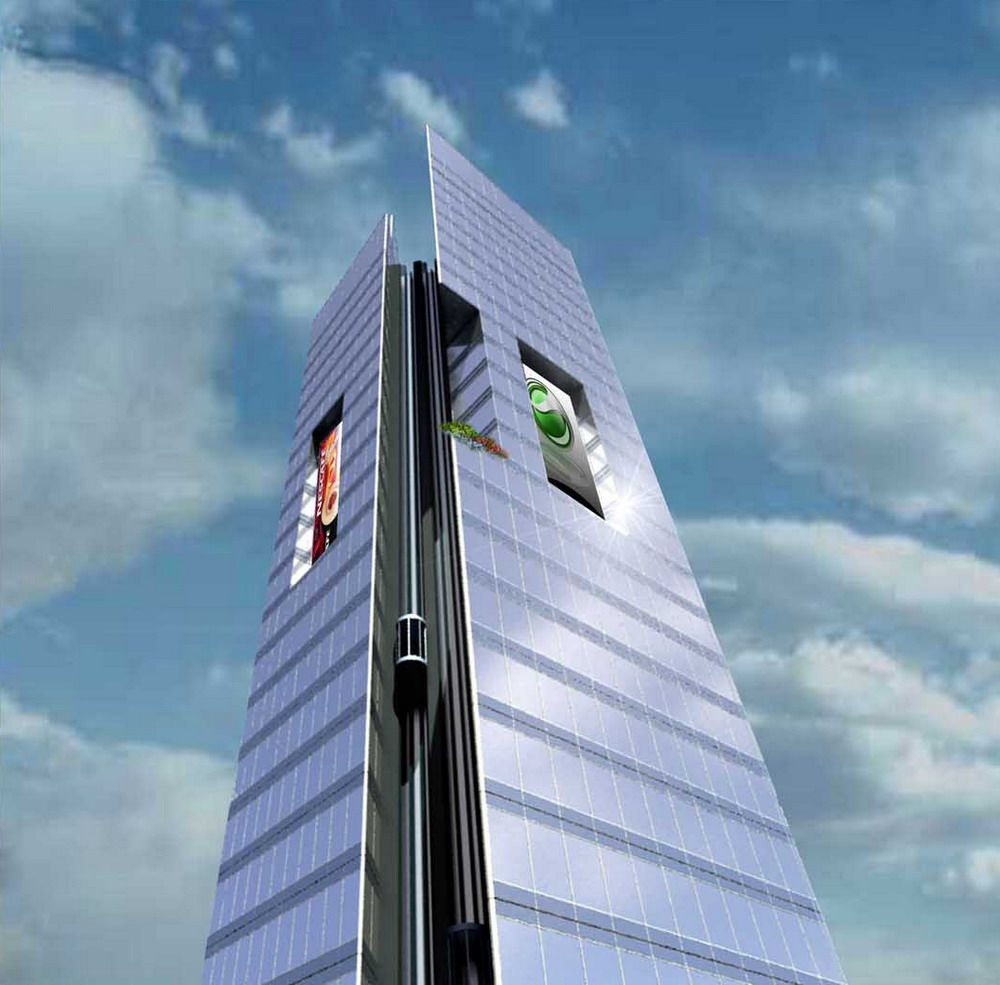

Al-Fayrouz Tower, Al Salmiya
Mixed-use development · Al Salmiya, Kuwait, Kuwait
Architectural design of the Al-Fayrouz commercial and residential tower in Al Salmiya, Kuwait, with OBD Kuwait.
Partners
OBD
Client
More from Al Salmiya
1976Shopping Mall, Offices and Multi-Storey Garage in KuwaitKuwait · 1976 Al-Aqeeq MarinaAl Khiran · 20082008Industrial Free Zone Development, KuwaitKuwait · 2008
Al-Aqeeq MarinaAl Khiran · 20082008Industrial Free Zone Development, KuwaitKuwait · 2008
Al-Aqeeq MarinaAl Khiran · 20082008Industrial Free Zone Development, KuwaitKuwait · 2008